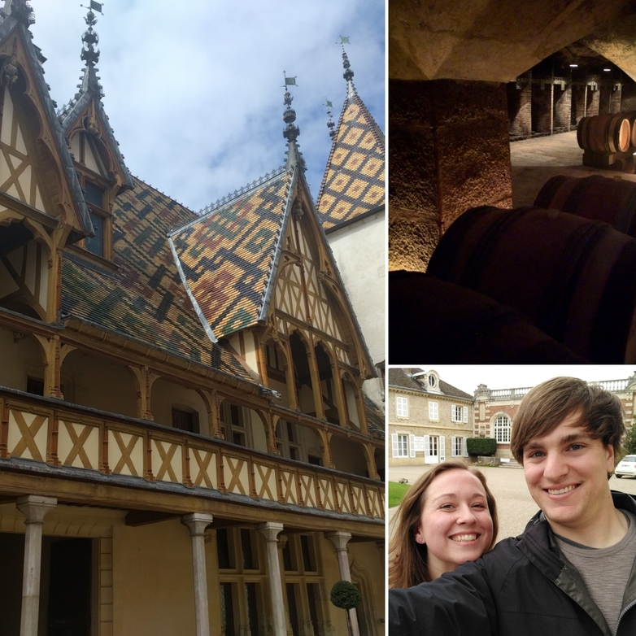
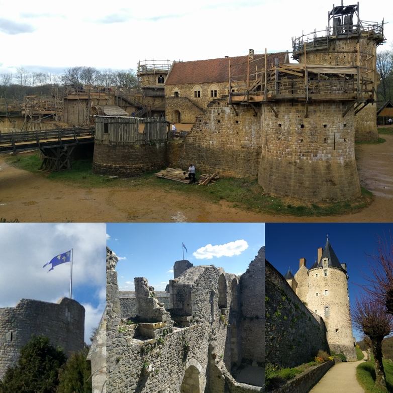
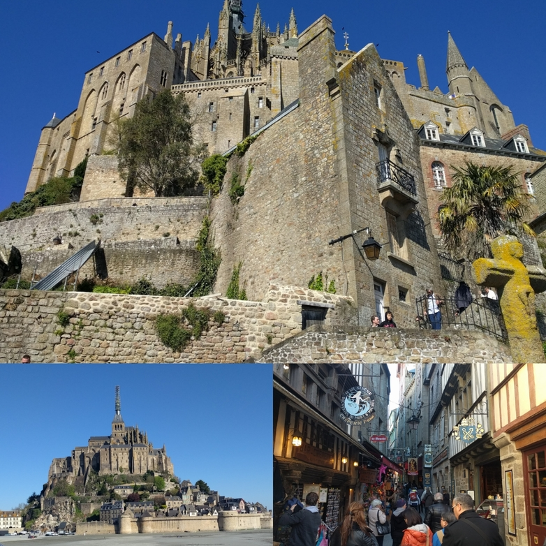
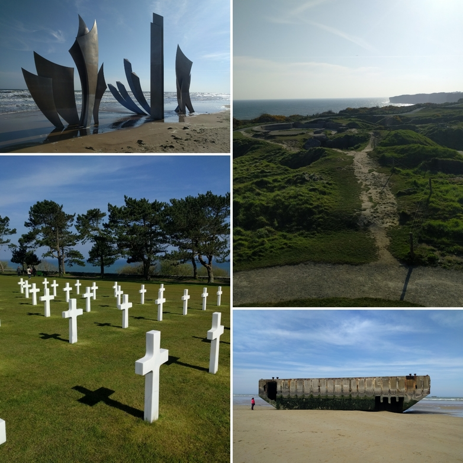
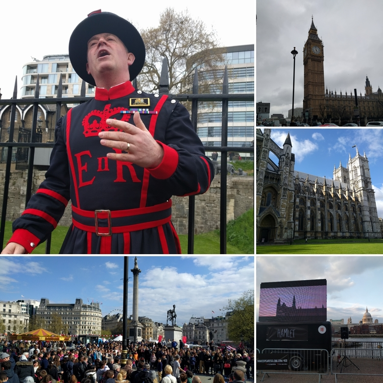
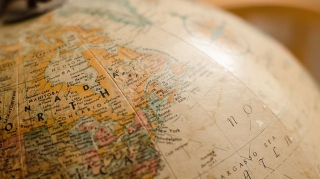

We flew from Boston into Paris, France. We ate dinner at the art at the Louvre. We also explored the catacombs beneath Eiffel Tower, biked around the city, and saw famous works of the city and had a picnic on the bank of the Seine.
We rented a car and drove down to Beaune. We toured the historic Hotel Dieu and tasted some of Burgandy's finest wines.
We then drove north to the Loire valley. We stopped at villages along the way, discovering many midæval castles (and one replica being built!)
Next we stopped at Mont St. Michel, an abbey built on a small island that connects with the mainland at low tide. A little further north, we saw the Tapestry of Bayeux, which details William the Conquerer's invasion of England in 1066 AD.
The most powerful part of the trip was when we visited the sites of the 1944 Allied Forces invasion of Normandy. Many beaches and hillsides still bear the scars of war, more than half a centry later.
We concluded our trip with a few days in London. We toured Parliament and the Tower of London, saw a series of short films inspired by Shakespeare, and explored some old world pubs. We even saw a festival on St. George's Day and the end of the London marathon!
